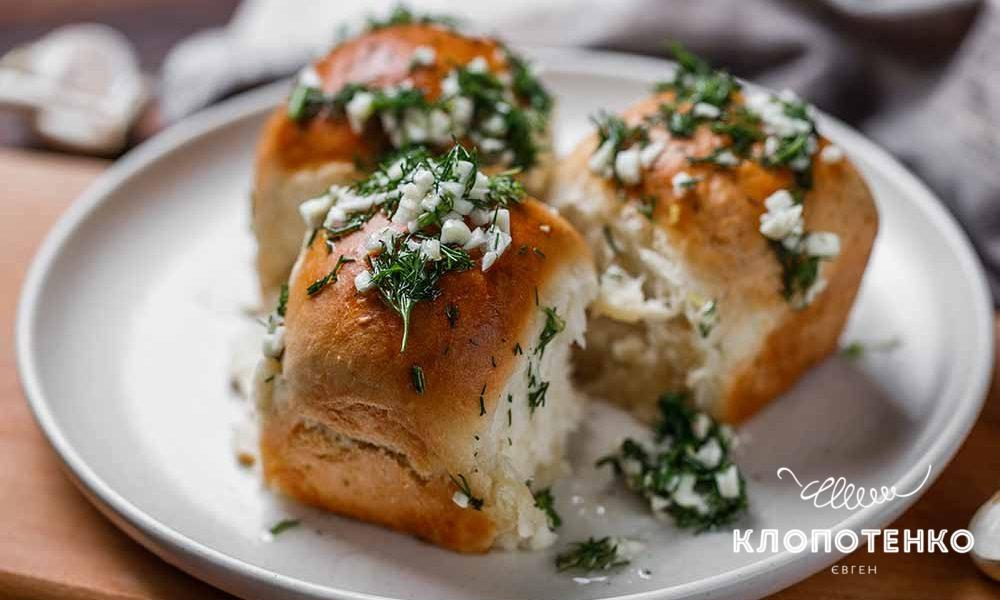

Пампушки
Склад інгредієнтів:
- Борошно - 500 г
- Дріжджі - 25 г
- Молоко - 250 мл
- Цукор - 1 ст. л.
- Сіль - 1 ч. л.
- Рослинна олія - 50 мл
- Часник - 3 зубчики
Інструкції з приготування:
- Розчинити дріжджі у теплому молоці з цукром.
- В більшу миску висипати борошно, додати сіль і змішати.
- Додати розчин дріжджів та молока до борошна та змішати.
- Поступово додавати рослинну олію і змішувати.
- Тісто покрити серветкою та залишити на 1 годину, щоб підійшло.
- Розігріти духовку до 200 градусів.
- З дрібно нарізаного часнику зробити пасту.
- Формувати пампушки з тіста та насипати на них пасту з часнику.
- Пекти у духовці близько 20-25 хвилин.